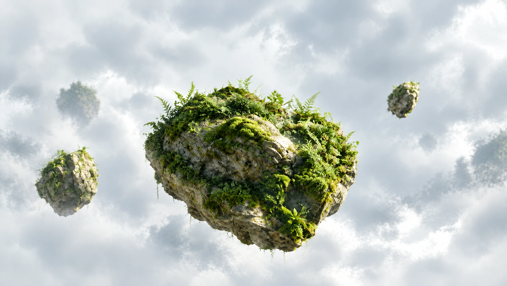
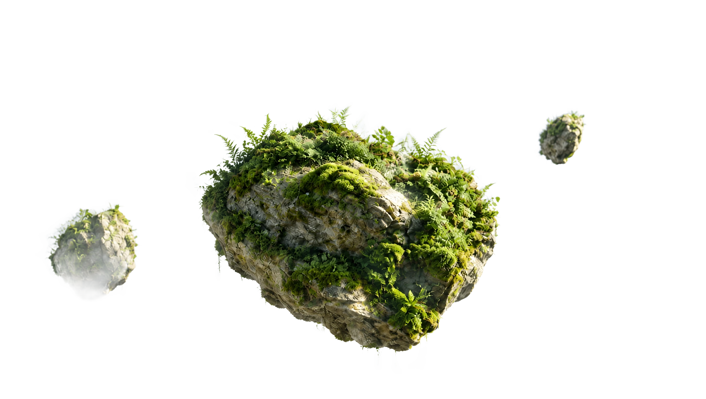

正在进入创作世界

让创意，成为影像。

＋THE CREATIVE FIELD
CONCEPT / VISUAL / MOTION
从一个想法，到一个完整世界
PERSONAL PORTFOLIO / 2026
SCROLL TO EXPLORE ↓
以设计构建视觉，以镜头讲述故事。
探索创意与AI共同生长的可能。
FROM CONCEPT TO CREATION想法，没有边界。
想法，没有边界。
创作，让它发生。
从视觉概念到动态影像
让每一个创意，都有完整的表达。
A CONNECTED CREATIVE PROCESS连接创意与制作，
连接创意与制作，
让画面有美感，
也让故事有方向。
点击场景中的能力标签，了解制作环节。
前往岛上入口视觉参考演示 · 非个人项目作品